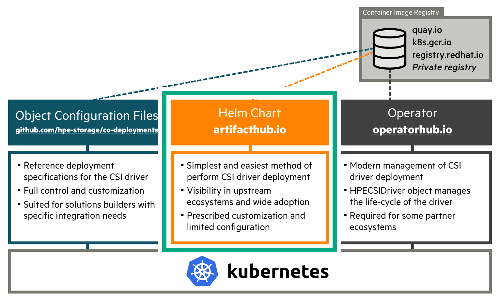

Overview¶
The HPE CSI Driver is deployed by using industry standard means, either a Helm chart or an Operator. An "advanced install" from object configuration files is provided as reference for partners, OEMs and users wanting to perform customizations and their own packaging or deployment methodologies.
Delivery Vehicles¶
As different methods of installation are provided, it might not be too obvious which delivery vehicle is the right one.

Need Help Deciding?¶
| I have a... | Then you need... |
|---|---|
| Vanilla upstream Kubernetes cluster on a supported host OS. | The Helm chart |
| Red Hat OpenShift 4.x cluster. | The certified CSI operator for OpenShift |
| Supported environment with multiple backends. | Helm chart with additional Secrets and StorageClasses |
| HPE Ezmeral Container Platform environment. | The Helm chart |
| Operator Life-cycle Manager (OLM) environment. | The CSI operator |
| Unsupported host OS/Kubernetes cluster and like to tinker. | The advanced install |
| Supported platform in an air-gapped environment | The Helm chart using the air-gapped procedure |
Undecided?
If it's not clear what you should use for your environment, the Helm chart is most likely the correct answer.
Helm¶
Helm is the package manager for Kubernetes. Software is being delivered in a format designated as a "chart". Helm is a standalone CLI that interacts with the Kubernetes API server using your KUBECONFIG file.
The official Helm chart for the HPE CSI Driver for Kubernetes is hosted on Artifact Hub. The chart only supports Helm 3 from version 1.3.0 of the HPE CSI Driver. In an effort to avoid duplicate documentation, please see the chart for instructions on how to deploy the CSI driver using Helm.
- Go to the chart on Artifact Hub.
Helm for Air-gapped Environments¶
In the event of deploying the HPE CSI Driver in a secure air-gapped environment, Helm is the recommended method. For sake of completeness, it's also possible to follow the advanced install procedures and replace "quay.io" in the deployment manifests with the internal private registry location.
Establish a working directory on a bastion Linux host that has HTTP access to the Internet, the private registry and the Kubernetes cluster where the CSI driver needs to be installed. The bastion host is assumed to have the docker, helm and curl command installed. It's also assumed throughout that the user executing docker has logged in to the private registry and that pulling images from the private registry is allowed anonymously by the Kubernetes compute nodes.
Note
Only the HPE CSI Driver 1.4.0 and later is supported using this methodology.
Create a working directory and set environment variables referenced throughout the procedure. In this example, we'll use HPE CSI Driver 1.4.0 on Kubernetes 1.20. Available versions are found in the co-deployments GitHub repo.
mkdir hpe-csi-driver
cd hpe-csi-driver
export MY_REGISTRY=registry.enterprise.example.com
export MY_CSI_DRIVER=2.0.0
export MY_K8S=1.21
Next, create a list with the CSI driver images. Copy and paste the entire text blob in one chunk.
curl -s https://raw.githubusercontent.com/hpe-storage/co-deployments/master/yaml/csi-driver/v${MY_CSI_DRIVER}/hpe-csi-k8s-${MY_K8S}.yaml \
https://raw.githubusercontent.com/hpe-storage/co-deployments/master/yaml/csi-driver/v${MY_CSI_DRIVER}/nimble-csp.yaml \
https://raw.githubusercontent.com/hpe-storage/co-deployments/master/yaml/csi-driver/v${MY_CSI_DRIVER}/3par-primera-csp.yaml \
| grep image: | awk '{print $2}' | sort | uniq > images
The above command should not output anything. A list of images should be in the file "images".
Pull, tag and push the images to the private registry.
cat images | xargs -n 1 docker pull
awk '{ print $1" "$1 }' images | sed "s/ quay.io| k8s.gcr.io/ ${MY_REGISTRY}/" | xargs -n 2 docker tag
sed -e "s/quay.io|k8s.gcr.io/${MY_REGISTRY}/" images | xargs -n 1 docker push
Tip
Depending on what kind of private registry being used, the base repositories hpe-storage and k8scsi might need to be created and given write access to the user pushing the images.
Next, install the chart as normal with the additional registry parameter. This is an example, please refer to the Helm chart documentation on ArtifactHub.
helm repo add hpe-storage https://hpe-storage.github.io/co-deployments/
kubectl create ns hpe-storage
helm install my-hpe-csi-driver hpe-storage/hpe-csi-driver -n hpe-storage --version ${MY_CSI_DRIVER} --set registry=${MY_REGISTRY}
Operator¶
The Operator pattern is based on the idea that software should be instantiated and run with a set of custom controllers in Kubernetes. It creates a native experience for any software running in Kubernetes.
The official HPE CSI Operator for Kubernetes is hosted on OperatorHub.io. The CSI Operator images are hosted both on docker.io and officially certified containers on Red Hat Ecosystem Catalog.
Red Hat OpenShift Container Platform¶
The HPE CSI Operator for Kubernetes is a fully certified Operator for OpenShift. There are a few tweaks needed and there's a separate section for OpenShift.
- See Red Hat OpenShift in the partner ecosystem section
Upstream Kubernetes and Others¶
Follow the documentation from the respective upstream distributions on how to deploy an Operator. In most cases, the Operator Lifecyle Manager (OLM) needs to be installed separately.
As an example, we'll deploy version 0.18.2 of the OLM to be able to manage the HPE CSI Operator. Familiarize yourself with the latest stable release on the OLM GitHub project's release page.
curl -L https://github.com/operator-framework/operator-lifecycle-manager/releases/download/v0.18.2/install.sh -o install.sh
chmod +x install.sh
./install.sh v0.18.2
Install the HPE CSI Operator.
kubectl create -f https://operatorhub.io/install/hpe-csi-operator.yaml
The Operator will be installed in my-hpe-csi-operator namespace. Watch it come up by inspecting the ClusterServiceVersion (CSV).
kubectl get csv -n my-hpe-csi-operator
Next, a HPECSIDriver object needs to be instantiated. Create a file named hpe-csi-operator.yaml and populate it according to which CSP is being deployed.
apiVersion: storage.hpe.com/v1
kind: HPECSIDriver
metadata:
name: csi-driver
namespace: my-hpe-csi-operator
spec:
cspClientTimeout: 60
disable:
alletra6000: false
alletra9000: false
nimble: false
primera: false
disableNodeConformance: false
disableNodeGetVolumeStats: false
imagePullPolicy: IfNotPresent
iscsi:
chapPassword: ""
chapUser: ""
kubeletRootDir: /var/lib/kubelet/
logLevel: info
registry: quay.io
Tip
The contents depends on which version of the CSI driver being installed. Please visit OperatorHub or ArtifactHub for more details.
Create a HPECSIDriver with the manifest.
kubectl create -f hpe-csi-operator.yaml
The CSI driver is now ready for use. Proceed to the next section to learn about adding an HPE storage backend.
Add an HPE Storage Backend¶
Once the CSI driver is deployed, two additional objects needs to be created to get started with dynamic provisioning of persistent storage, a Secret and a StorageClass.
Tip
Naming the Secret and StorageClass is entirely up to the user, however, to keep up with the examples on SCOD, it's highly recommended to use the names illustrated here.
Secret Parameters¶
All parameters are mandatory and described below.
| Parameter | Description |
|---|---|
| serviceName | This hostname or IP address where the Container Storage Provider (CSP) is running, usually a Kubernetes Service, such as "alletra6000-csp-svc" or "alletra9000-csp-svc" |
| servicePort | This is port the serviceName is listening to. |
| backend | This is the management hostname or IP address of the actual backend storage system, such as an Alletra 6000 or 9000 array. |
| username | Backend storage system username with the correct privileges to perform storage management. |
| password | Backend storage system password. |
Example:
apiVersion: v1
kind: Secret
metadata:
name: hpe-backend
namespace: hpe-storage
stringData:
serviceName: alletra6000-csp-svc
servicePort: "8080"
backend: 192.168.1.110
username: admin
password: admin
apiVersion: v1
kind: Secret
metadata:
name: hpe-backend
namespace: hpe-storage
stringData:
serviceName: alletra9000-csp-svc
servicePort: "8080"
backend: 10.10.0.20
username: 3paradm
password: 3pardata
apiVersion: v1
kind: Secret
metadata:
name: hpe-backend
namespace: hpe-storage
stringData:
serviceName: nimble-csp-svc
servicePort: "8080"
backend: 192.168.1.2
username: admin
password: admin
apiVersion: v1
kind: Secret
metadata:
name: hpe-backend
namespace: hpe-storage
stringData:
serviceName: primera3par-csp-svc
servicePort: "8080"
backend: 10.10.0.2
username: 3paradm
password: 3pardata
Create the Secret using kubectl:
kubectl create -f secret.yaml
Tip
In a real world scenario it's more practical to name the Secret something that makes sense for the organization. It could be the hostname of the backend or the role it carries, i.e "hpe-alletra-sanjose-prod".
Next step involves creating a default StorageClass.
Configuring Additional Storage Backends¶
It's not uncommon to have multiple HPE primary storage systems within the same environment, either the same family or different ones. This section walks through the scenario of managing multiple StorageClass and Secret API objects to represent an environment with multiple systems.
There's a brief tutorial available in the Video Gallery that walks through these steps.
Note
Make note of the Kubernetes Namespace or OpenShift project name used during the deployment. In the following examples, we will be using the "hpe-storage" Namespace.
To view the current Secrets in the "hpe-storage" Namespace (assuming default names):
kubectl -n hpe-storage get secret/hpe-backend
NAME TYPE DATA AGE
hpe-backend Opaque 5 2m
This Secret is used by the CSI sidecars in the StorageClass to authenticate to a specific backend for CSI operations. In order to add a new Secret or manage access to multiple backends, additional Secrets will need to be created per backend.
Secret Requirements
- Each
Secretname must be unique. - servicePort should be set to 8080.
To create a new Secret, specify the name, Namespace, backend username, backend password and the backend IP address to be used by the CSP and save it as custom-secret.yaml (a detailed description of the parameters are available above).
apiVersion: v1
kind: Secret
metadata:
name: custom-secret
namespace: hpe-storage
stringData:
serviceName: alletra6000-csp-svc
servicePort: "8080"
backend: 192.168.1.110
username: admin
password: admin
apiVersion: v1
kind: Secret
metadata:
name: custom-secret
namespace: hpe-storage
stringData:
serviceName: alletra9000-csp-svc
servicePort: "8080"
backend: 10.10.0.20
username: 3paradm
password: 3pardata
apiVersion: v1
kind: Secret
metadata:
name: custom-secret
namespace: hpe-storage
stringData:
serviceName: nimble-csp-svc
servicePort: "8080"
backend: 192.168.1.2
username: admin
password: admin
apiVersion: v1
kind: Secret
metadata:
name: custom-secret
namespace: hpe-storage
stringData:
serviceName: primera3par-csp-svc
servicePort: "8080"
backend: 10.10.0.2
username: 3paradm
password: 3pardata
Create the Secret using kubectl:
kubectl create -f custom-secret.yaml
You should now see the Secret in the "hpe-storage" Namespace:
kubectl -n hpe-storage get secret/custom-secret
NAME TYPE DATA AGE
custom-secret Opaque 5 1m
Create a StorageClass with the Custom Secret¶
To use the new Secret "custom-secret", create a new StorageClass using the Secret and the necessary StorageClass parameters. Please see the requirements section of the respective CSP.
apiVersion: storage.k8s.io/v1
kind: StorageClass
metadata:
name: hpe-custom
provisioner: csi.hpe.com
parameters:
csi.storage.k8s.io/fstype: xfs
csi.storage.k8s.io/controller-expand-secret-name: custom-secret
csi.storage.k8s.io/controller-expand-secret-namespace: hpe-storage
csi.storage.k8s.io/controller-publish-secret-name: custom-secret
csi.storage.k8s.io/controller-publish-secret-namespace: hpe-storage
csi.storage.k8s.io/node-publish-secret-name: custom-secret
csi.storage.k8s.io/node-publish-secret-namespace: hpe-storage
csi.storage.k8s.io/node-stage-secret-name: custom-secret
csi.storage.k8s.io/node-stage-secret-namespace: hpe-storage
csi.storage.k8s.io/provisioner-secret-name: custom-secret
csi.storage.k8s.io/provisioner-secret-namespace: hpe-storage
description: "Volume created by using a custom Secret with the HPE CSI Driver for Kubernetes"
reclaimPolicy: Delete
allowVolumeExpansion: true
apiVersion: storage.k8s.io/v1
kind: StorageClass
metadata:
name: hpe-custom
provisioner: csi.hpe.com
parameters:
csi.storage.k8s.io/fstype: xfs
csi.storage.k8s.io/resizer-secret-name: custom-secret
csi.storage.k8s.io/resizer-secret-namespace: hpe-storage
csi.storage.k8s.io/controller-publish-secret-name: custom-secret
csi.storage.k8s.io/controller-publish-secret-namespace: hpe-storage
csi.storage.k8s.io/node-publish-secret-name: custom-secret
csi.storage.k8s.io/node-publish-secret-namespace: hpe-storage
csi.storage.k8s.io/node-stage-secret-name: custom-secret
csi.storage.k8s.io/node-stage-secret-namespace: hpe-storage
csi.storage.k8s.io/provisioner-secret-name: custom-secret
csi.storage.k8s.io/provisioner-secret-namespace: hpe-storage
description: "Volume created by using a custom Secret with the HPE CSI Driver for Kubernetes"
reclaimPolicy: Delete
allowVolumeExpansion: true
Note
Don't forget to call out the StorageClass explicitly when creating PVCs from non-default StorageClasses.
Next, Create a PersistentVolumeClaim from a StorageClass.
Advanced Install¶
This guide is primarily written to accommodate a highly manual installation on upstream Kubernetes or partner OEMs engaged with HPE to bundle the HPE CSI Driver in a custom distribution. Installation steps may vary for different vendors and flavors of Kubernetes.
The following example walks through deployment of the latest CSI driver.
Critical
It's highly recommended to use either the Helm chart or Operator to install the HPE CSI Driver for Kubernetes and the associated Container Storage Providers. Only venture down manual installation if your requirements can't be met by the Helm chart or Operator.
Manual CSI Driver Install¶
Deploy the CSI driver and sidecars for the relevant Kubernetes version.
Uninstalling the CSI driver when installed manually
The manifests below create a number of objects, including CustomResourceDefinitions (CRDs) which may hold critical information about storage resources. Simply deleting the below manifests in order to uninstall the CSI driver may render PersistentVolumes unusable.
Common¶
These object configuration files are common for all versions of Kubernetes.
All components below are deployed in the "hpe-storage" Namespace.
kubectl create ns hpe-storage
Worker node IO settings:
kubectl apply -f https://raw.githubusercontent.com/hpe-storage/co-deployments/master/yaml/csi-driver/v2.0.0/hpe-linux-config.yaml
Container Storage Provider:
kubectl apply -f https://raw.githubusercontent.com/hpe-storage/co-deployments/master/yaml/csi-driver/v2.0.0/nimble-csp.yaml
kubectl apply -f https://raw.githubusercontent.com/hpe-storage/co-deployments/master/yaml/csi-driver/v2.0.0/3par-primera-csp.yaml
Important
The above instructions assumes you have an array with a supported platform OS installed. Please see the requirements section of the respective CSP.
Install the CSI driver:
kubectl apply -f https://raw.githubusercontent.com/hpe-storage/co-deployments/master/yaml/csi-driver/v2.0.0/hpe-csi-k8s-1.21.yaml
kubectl apply -f https://raw.githubusercontent.com/hpe-storage/co-deployments/master/yaml/csi-driver/v2.0.0/hpe-csi-k8s-1.20.yaml
kubectl apply -f https://raw.githubusercontent.com/hpe-storage/co-deployments/master/yaml/csi-driver/v2.0.0/hpe-csi-k8s-1.19.yaml
kubectl apply -f https://raw.githubusercontent.com/hpe-storage/co-deployments/master/yaml/csi-driver/v2.0.0/hpe-csi-k8s-1.18.yaml
Seealso
Older and unsupported versions of Kubernetes and the CSI driver are archived on this page.
Depending on which version is being deployed, different API objects gets created. Next step: Add an HPE Storage Backend.
Advanced Uninstall¶
The following steps outline how to uninstall the CSI driver that has been deployed using the Advanced Install above.
Caution
Uninstalling the HPE CSI Driver while applications have volumes mounted through the CSI driver can lead to IO disruption or data loss. Exercise extreme care when uninstalling.
Uninstall Worker node settings:
kubectl delete -f https://raw.githubusercontent.com/hpe-storage/co-deployments/master/yaml/csi-driver/v2.0.0/hpe-linux-config.yaml
Uninstall relevant Container Storage Provider:
kubectl delete -f https://raw.githubusercontent.com/hpe-storage/co-deployments/master/yaml/csi-driver/v2.0.0/nimble-csp.yaml
kubectl delete deployment.apps/primera3par-csp
kubectl delete service/primera3par-csp-svc
kubectl delete service/alletra9000-csp-svc
HPE Alletra 9000, Primera and 3PAR users
If you are reinstalling the HPE CSI Driver, DO NOT remove the crd/hpevolumeinfos.storage.hpe.com resource. This CustomResourceDefinition contains important volume metadata used by the HPE Alletra 9000, Primera and 3PAR CSP.
Uninstall the CSI driver:
kubectl delete -f https://raw.githubusercontent.com/hpe-storage/co-deployments/master/yaml/csi-driver/v2.0.0/hpe-csi-k8s-1.21.yaml
kubectl delete -f https://raw.githubusercontent.com/hpe-storage/co-deployments/master/yaml/csi-driver/v2.0.0/hpe-csi-k8s-1.20.yaml
kubectl delete -f https://raw.githubusercontent.com/hpe-storage/co-deployments/master/yaml/csi-driver/v2.0.0/hpe-csi-k8s-1.19.yaml
kubectl delete -f https://raw.githubusercontent.com/hpe-storage/co-deployments/master/yaml/csi-driver/v2.0.0/hpe-csi-k8s-1.18.yaml
If no longer needed, delete the "hpe-storage" Namespace.
kubectl delete ns hpe-storage